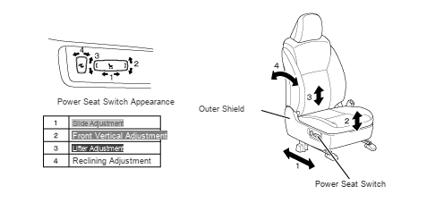

| Front Power Seat |
| ● |
The power seat adopts an adjustment mechanism with electric adjusters, allowing easy position adjustment. In addition, the power seat switch is located on the outer shield on the right side of the driver seat.
|
 |
 Power Slide Mechanism Power Slide Mechanism
|
Power Lifter Mechanism
|

Power Reclining Mechanism
|

Power Front Vertical Mechanism
|